| 日付 | 2008年2月16日（土） |
|---|---|
| 山域 | 西上州 |
| メンバー | 単独 |
| 山行形態 | 日帰り |
| アクセス | 電車、バス |
| ルート (Map) | 法久→東御荷鉾山→西御荷鉾山→早滝→塩沢ダム |
『父不見 御荷鉾も見えず 神流川 星ばかりなる 万場の泊まり』
と詠まれた御荷鉾山へ行ってみることにする。
父不見（ててみえず）山は不思議な山名とは裏腹に地味な山。
御荷鉾山は西上州を代表する名山だが、
御荷鉾スーパー林道のせいで、登山の魅力は薄れてしまった。
10:12 法久バス停到着。標高310m。
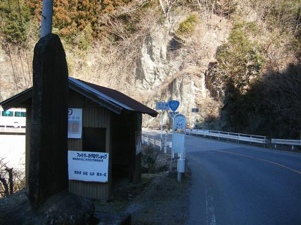
薄暗い沢沿いの道を登っていく。この辺りの水はなぜか白く濁っている。
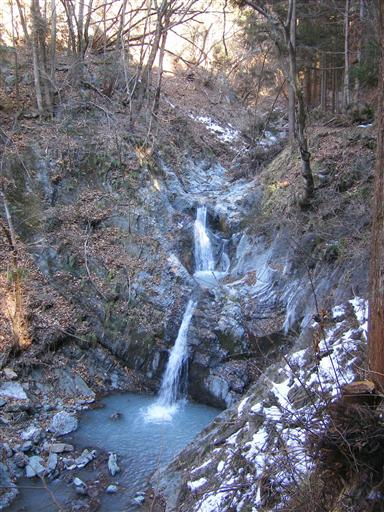
しばらく登ると法久の集落に到着する。
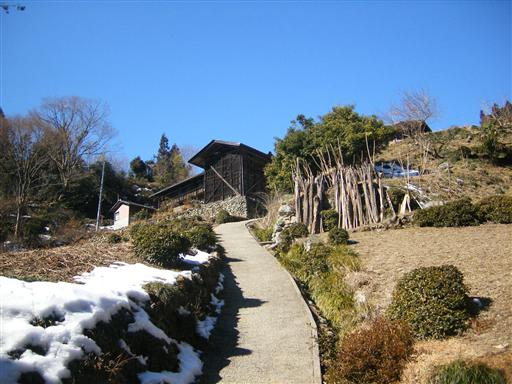
山奥深い集落だが、明るくて非常に雰囲気がよい。
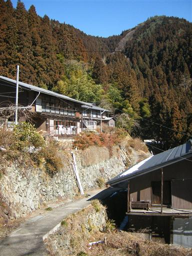
集落の側には小さな神社が建てられている。
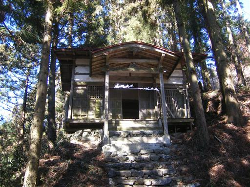
一登りで御荷鉾スーパー林道に到達する。
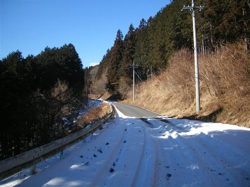
遠くに東御荷鉾山が見える。結構歩いて来たがまだ距離がありそう。
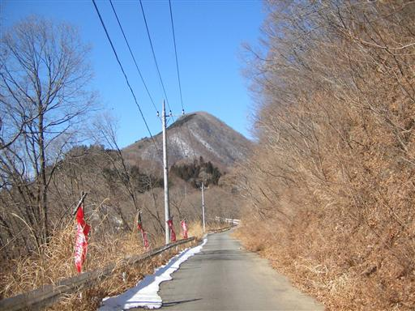
東御荷鉾山へは雑木林の中を登っていく。
だんだんと雪が深くなってくる。
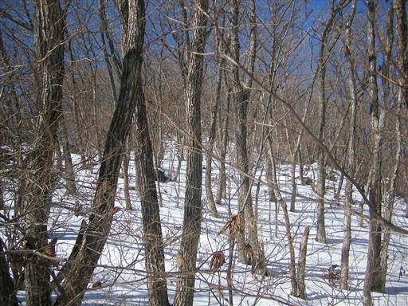
12:18 東御荷鉾山山頂到着。標高1246m。
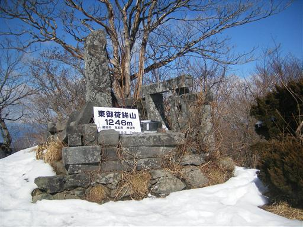
山頂からは南側の展望が開けている。
武甲山から両神山、その奥に奥秩父の山並が見渡せる。
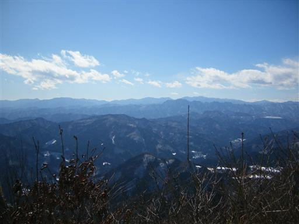
東御荷鉾山から西御荷鉾山へ向かう。
稜線の雪は結構深く、足跡もほとんどついていない。
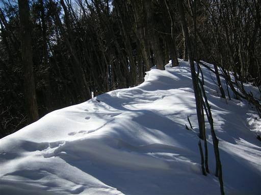
西御荷鉾山が目の前に姿をあらわす。
一旦下った後の登り返しがきつそう。
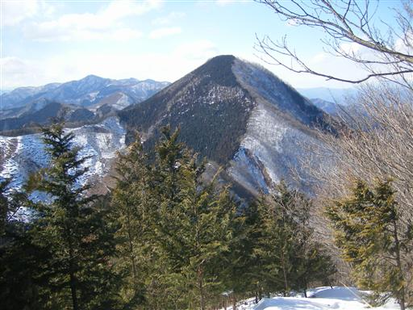
東御荷鉾山と西御荷鉾山の鞍部に降り立つ。
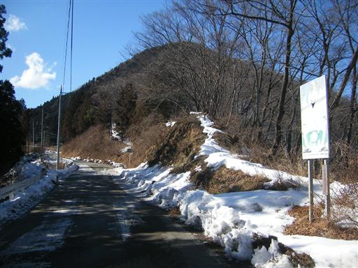
西御荷鉾山へは植林地帯の中を登っていく。
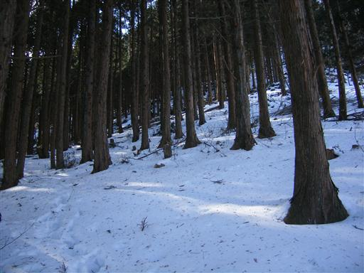
13:53 西御荷鉾山山頂到着。標高1286m。
非常に明るい山頂。三角点があるのはこちら。
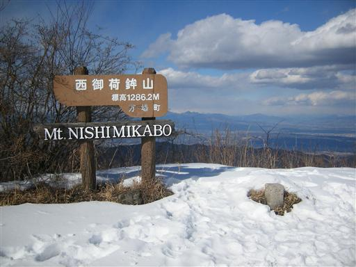
若干雲はかかっているが、北側に広がる上越国境稜線の山並が見渡せる。
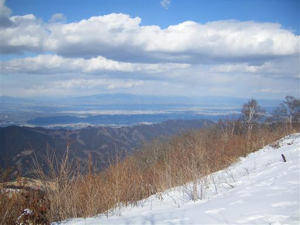
山頂付近には立派な石像が祀られている。
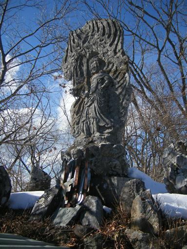
休憩を取った後、静かな山頂を辞する。
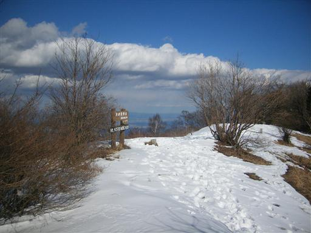
西御荷鉾山を下山する。
ここから冬季閉鎖中のスーパー林道を長時間歩くことになる。
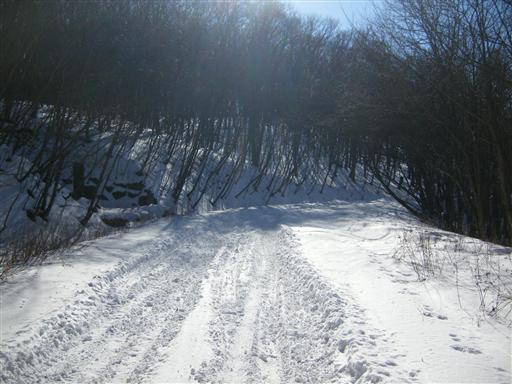
端正な形をしたオドケ山が見えてきた。
往復30分で行けるこの山には登る予定でいたが、時間が無いのでスキップする。

左手には特徴ある両神山の山並がよく見える。
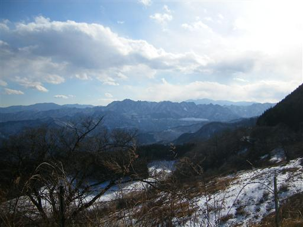
車道下りの途中で寄り道し、早滝を見に行くことにする。
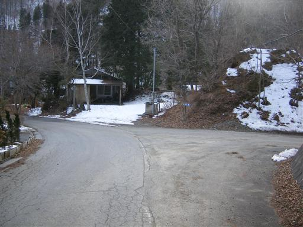
辺りの滝は皆凍りついている。
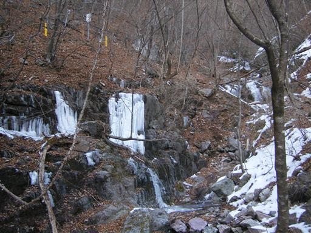
早滝への道は鎖場などがあり、御荷鉾山登山道より難所がある。
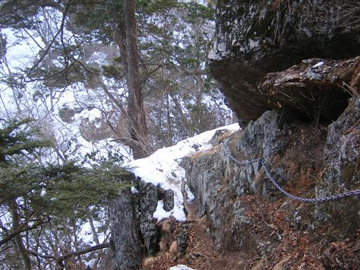
早滝に到着。非常に美しい氷瀑。
見事に凍り付いていて、巨大なツララが何本も垂れ下がっている。
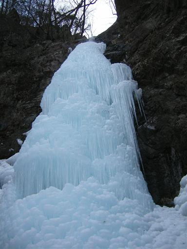
滝の麓も氷で埋め尽くされている。
周りの雪は白いのに、なぜか滝だけ青白く光っている。
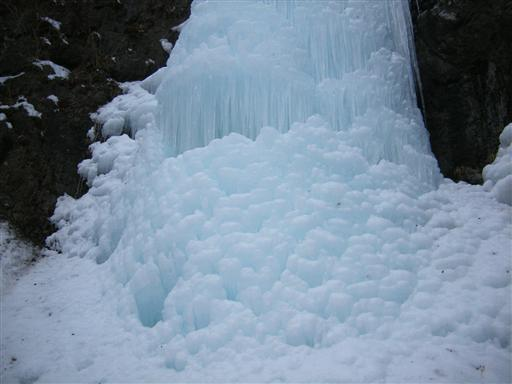
観光案内板にあった早滝の姿。
冬以外はごくごく普通の滝のようだ。
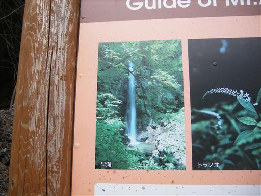
早滝の下流に造られた塩沢ダムに到着する。
バス停まであと40分ほどのところで、親切な方に車で拾ってもらう。
その方も西上州の山が大好きとのことで話が弾む。
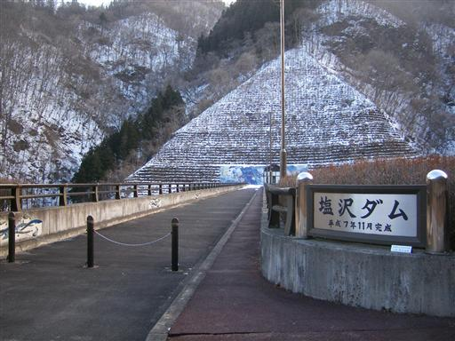